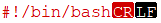
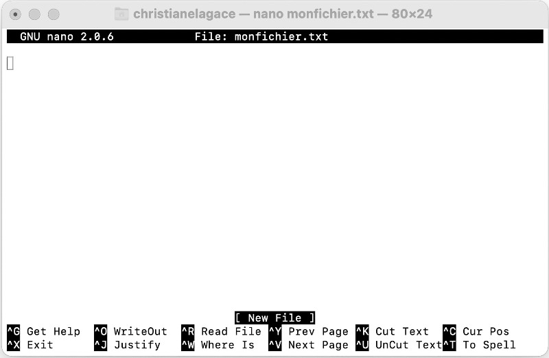

3. Linux¶
3.1 Les touches de clavier avec Linux¶
Si vous travaillez sous Linux, je parie que vous avez déjà recherché où diable était la touche qui permet d'obtenir le caractère souhaité.
J'ai produit pour vous l'emplacement des caractères avec une configuration de clavier US.
Les caractères en rouge sont ceux qui diffèrent de ce qui est imprimé sur un clavier QUERTY pour Windows.
Source de l'image originale : https://commons.wikimedia.org/wiki/File:KB_Canadian_French_text.svg?uselang=fr
{kind=link}
Remarquez que sous Linux, la touche Alt ne permet pas d'obtenir un caractère différent. Chaque touche peut donc produire seulement deux caractères : celui du bas correspond à la touche seule, celui du haut correspond à la touche combinée avec Maj.
3.2 Quelle version de Linux est installée ?¶
Vous désirez connaître la distribution et la version de Linux qui tourne sur votre système ou même la version du noyau? Plusieurs commandes vous permettent d'obtenir ces informations.
Version du noyau avec uname¶
La commande uname (diminutif pour Unix name) est une façon simple d'obtenir la version du noyau.
Linux
Sous Raspberry Pi OS 10 (Buster), on obtient ceci :
Résultat à l'écran
lsb_release¶
La commande lsb_release (Linux Standard Base Release) permet d'obtenir spécifiquement la distribution Linux et son numéro de version.
Linux
Note : si vous obtenez le message « lsb-release: command not found », vous devrez d'abord installer ce module à l'aide de la commande sudo apt install lsb-release.
Résultat sous Raspberry Pi OS :
Résultat à l'écran
No LSB modules are available.
Distributor ID: Raspbian
Description: Raspbian GNU/Linux 10 (buster)
Release: 10
Codename: buster
3.3 Rechercher un fichier (find)¶
Savoir rechercher efficacement un fichier sous Linux est certainement le meilleur gagne-temps pour un programmeur.
La commande find vous permettra d'effectuer différentes recherches. Elle utilise la syntaxe suivante :
Syntaxe de commande Linux
Pour rechercher un fichier par son nom :
Commande Linux
Pour ne pas voir les messages "Permission denied", on redirige la sortie d'erreur standard (stderr, soit la sortie no 2) vers le néant :
Commande Linux
Rechercher une chaîne de caractères dans un fichier¶
Pour rechercher les fichiers contenant une chaîne de caractère précise, on combine find avec grep. Puisque cette commande est plus longue à exécuter, on prendra soin de limiter la recherche aux fichiers réguliers (-type f) pour éviter de traiter les fichiers spéciaux (ex : block, named pipe, symbolic link, socket)
Commande Linux
Ici encore, on peut rediriger la sortie d'erreur standard. Il faut prendre soin d'ajouter l'instruction avant le "|" :
Commande Linux
Rechercher les fichiers modifiés depuis X temps¶
find permet également de rechercher les fichiers modifiés depuis 24h :
Commande Linux
ou depuis 5 minutes :
Commande Linux
Exclure un dossier de la recherche¶
Pour rechercher les fichiers dont le nom se termine par .json dans le dossier courant et ses sous dossiers à l'exception du sous-dossier vendor :
Commande Linux
3.4 Quelques commandes Linux utiles¶
Je vous présente ici quelques commandes qui pourraient vous être utiles lorsque vous travaillez à la console sous Linux.
Il ne s'agit pas de commandes de base mais bien de commandes moins connues ou plus complexe, qu'il est bon d'avoir sous la main au besoin.
Système¶
| Commande | Utilité |
|---|---|
| cat /etc/os-release | Afficher la version de Linux |
| ip addr show | Afficher l'adresse IP de l'ordinateur (l'adresse IP se trouve vers la fin des informations affichées, dans la section qui débute par eth0 pour le réseau câblé ou wlan0 pour le sans fil, tout de suite après le mot inet) |
| ifconfig | Afficher l'adresse IP de l'ordinateur (l'adresse IP se trouve vers la fin des informations affichées, dans la section qui débute par eth0 pour le réseau câblé ou wlan0 pour le sans fil, tout de suite après le mot inet) |
Système de fichiers¶
| Commande | Utilité |
|---|---|
| ll | Identique à ls -la : Lister tous les fichiers avec leurs attributs (l) incluant les fichiers cachés (a) |
| ls -R | Afficher le contenu des répertoires récursivement |
| cd - | Basculer entre deux répertoires |
| rm -R nomdossier | Effacer tout ce qui est compris dans le répertoire nomdossier ainsi que tous les sous-répertoire, y compris le répertoire nomdossier lui-même |
| tree | Affiche les dossiers et leur hiérarchie de façon graphique. |
| find . -type f -exec chmod 644 {} \; | Donne les droits 644 (u: rw, g: r, o: r) à tous les fichiers du dossier courant et de ses sous-dossiers. |
Recherche¶
| Commande | Utilité |
|---|---|
| grep id ChaletsController.php | Rechercher toutes les lignes du fichier ChaletsController.php qui contiennent la chaîne "id" (grep = Global Regular Expression Print) La commande grep est souvent utilisée à la suite d'une autre commande en séparant les deux par un pipe ( |
| find -type f | xargs grep allo |
| find -type f -print 0 | xargs -0 grep unechaine |
| find ~ -name preferences.txt 2>/dev/null | Rechercher un fichier dans le dossier personnel (~) un fichier nommé "preferences.txt" sans afficher les message d'erreur du genre "Permission denied". |
| ll | awk '$6=="Feb" ' |
| find ~ -type f -printf "%T@ %p\n" | sort -n |
Gestion des usagers¶
| Commande | Utilité |
|---|---|
| useradd agagnon -c "Annie Gagnon" -g info | Créer l'usager agagnon et l'assigner au groupe info |
| passwd agagnon | Changer le mot de passe de l'usager agagnon |
| finger ou who ou w ou users | Ces quatre commandes servent à afficher les informations sur les usagers présentement logués. finger doit son nom à son utilité originale : pointer du doigt ceux qui ne travaillaient pas ! |
| cut -d: -f1 /etc/passwd | Lister les usagers existant localement sur l'ordinateur |
| awk -F':' '$2 ~ "$" {print $1}' /etc/shadow ou awk -F'[/:]' '{if ($3 >= 1000 && $3 != 65534) print $1}' /etc/passwd | Lister les usagers pouvant s'authentifier (donc excluant les usagers système) |
3.5 Éteindre un système Linux de façon sécuritaire¶
Il n'est pas recommandé de fermer un ordinateur qui roule sous Linux en le débranchant directement. Ceci empêche Linux de faire son « ménage » avant de se refermer, laissant des fichiers de travail à la traîne.
De plus, si l'ordinateur est en train de travailler, il pourrait y avoir une perte de données.
Pire encore, ceci pourrait corrompre le système de fichiers.
Interface graphique¶
Si vous disposez d'une interface graphique, il est facile d'utiliser l'option de menu Shutdown / Shutdown.
Ligne de commande¶
Sinon, il existe quelques commandes qui permettent d'éteindre l'ordinateur de façon sécuritaire.
Selon la version de Linux utilisée, il peut y avoir quelques différences entre ces commandes mais sur Raspberry Pi OS, elles sont équivalentes.
Lorsque vous entrez une de ces commandes, la LED verte clignote une dizaine de fois puis s'éteint. La LED rouge (power) demeure cependant allumée.
Il ne faut pas retirer le câble d'alimentation tant que la LED verte n'est pas éteinte.
Si vous entrez une de ces commandes à partir de votre ordinateur dans une fenêtre Terminal branchée au Pi via SSH, vous verrez ceci à l'écran :
Terminal
pi@raspberrypi:~ $ sudo poweroff
Connection to 192.168.1.145 closed by remote host.
Connection to 192.168.1.145 closed.
Attendez ensuite quelques secondes, le temps que la LED verte s'éteigne, puis vous pourrez retirer le câble d'alimentation sans risquer de corrompre la carte micro SD.
sudo or not sudo?¶
Certaines commandes nécessitent que vous ajoutiez un sudo devant afin d'avoir les droits d'administration, d'autres pas.
De plus, le sudo peut être requis dans une fenêtre SSH mais pas directement sur le Pi.
Dans les exemples qui suivent, j'ai mis le sudo seulement lorsqu'il est requis directement sur le Raspberry Pi avec l'usager pi.
shutdown¶
La commande favorite des connaisseurs est shutdown. Elle permet de préciser quand l'arrêt se produira, d'avertir les autres usagers authentifiés qu'un arrêt est prévu (utile sur un système Linux utilisé comme serveur, moins sur un Pi) et d'empêcher d'autres usager de s'authentifier avant l'arrêt.
De plus, sur certains systèmes, elle permet de mettre le système en veille avec l'option -H ou en arrêt complet avec l'option -P. Sous Raspberry Pi OS, elle cause toujours un arrêt complet.
Pour arrêter le système immédiatement :
Terminal
halt¶
Historiquement, la commande halt avait été conçue pour arrêter toute activité sur l'ordinateur sans toutefois couper le courant.
De nos jours, sur la plupart des systèmes Linux, elle coupe l'activité et arrête le courant. Elle est donc équivalente à shutdown now.
Terminal
ou
Terminal
poweroff¶
La commande poweroff sert à arrêter l'activité de l'ordinateur et à couper le courant. Elle est donc elle aussi équivalente à shutdown now.
Terminal
ou
Terminal
reboot¶
Si votre but est d'arrêter le système Linux de façon sécuritaire puis le redémarrer, reboot est votre ami.
Terminal
ou
Terminal
Le système Linux peut également être redémarré à l'aide de la combinaison de touches Ctrl + Alt + Suppr.
Interrupteur d'alimentation¶
L'ajout d'un simple interrupteur d'alimentation sur le câble du Pi n'est pas suffisant, il faut faire un shutdown propre afin de terminer correctement tous les processus avant de couper l'alimentation.
Il est tout de même possible de créer un bouton qui lancera les signaux d'arrêt pour les processus et tout le tralala avant de couper l'alimentation.
De nombreux tutoriels couvrent déjà cette option :
- https://www.quartoknows.com/page/raspberry-pi-bouton-darret
- https://magpi.raspberrypi.org/articles/off-switch-raspberry-pi
- https://core-electronics.com.au/tutorials/how-to-make-a-safe-shutdown-button-for-raspberry-pi.html
- http://riton-duino.blogspot.com/2019/10/raspberry-pi-un-bouton-power-off.html
Pour plus d'information¶
« 3 commands to reboot Linux (plus 4 more ways to do it safely) ». opensource.com. https://opensource.com/article/19/7/reboot-linux
« 5 Ways to Shut Down Your Linux Computer From the Command Line ». Make Use Of. https://www.makeuseof.com/tag/ways-shut-down-linux-command-line/
« Understanding Shutdown, Poweroff, Halt and Reboot Commands in Linux ». TecMint. https://www.tecmint.com/shutdown-poweroff-halt-and-reboot-commands-in-linux/
3.6 Les variables d'environnement Linux¶
Les variables d'environnement, sont des variables définies directement dans le système d'exploitation. Elles peuvent être utilisées dans n'importe quel programme.
Certaines variables sont disponibles en tout temps. D'autres ne sont disponibles que jusqu'au prochain redémarrage du système. Tout dépend de la façon dont elles ont été créées.
Lister toutes les variables d'environnement¶
Pour connaître les variables d'envrionnement de votre système :
Terminal
Sur mon Raspberry Pi, j'obtiens ceci :
Résultat à l'écran
SHELL=/bin/bash
NO\_AT\_BRIDGE=1
PWD=/home/pi
LOGNAME=pi
XDG\_SESSION\_TYPE=tty
HOME=/home/pi
LANG=en\_GB.UTF-8
LS\_COLORS=rs=0:di=01;34:ln=01;36:mh=00:pi=40;33:so=01;35:do=01;35:bd=40;33;01:cd=40;33;01:or=40;31;01:mi=00:su=37;41:sg=30;43:ca=30;41:tw=30;42:ow=34;42:st=37;44:ex=01;32:\*.tar=01;31:\*.tgz=01;31:\*.arc=01;31:\*.arj=01;31:\*.taz=01;31:\*.lha=01;31:\*.lz4=01;31:\*.lzh=01;31:\*.lzma=01;31:\*.tlz=01;31:\*.txz=01;31:\*.tzo=01;31:\*.t7z=01;31:\*.zip=01;31:\*.z=01;31:\*.dz=01;31:\*.gz=01;31:\*.lrz=01;31:\*.lz=01;31:\*.lzo=01;31:\*.xz=01;31:\*.zst=01;31:\*.tzst=01;31:\*.bz2=01;31:\*.bz=01;31:\*.tbz=01;31:\*.tbz2=01;31:\*.tz=01;31:\*.deb=01;31:\*.rpm=01;31:\*.jar=01;31:\*.war=01;31:\*.ear=01;31:\*.sar=01;31:\*.rar=01;31:\*.alz=01;31:\*.ace=01;31:\*.zoo=01;31:\*.cpio=01;31:\*.7z=01;31:\*.rz=01;31:\*.cab=01;31:\*.wim=01;31:\*.swm=01;31:\*.dwm=01;31:\*.esd=01;31:\*.jpg=01;35:\*.jpeg=01;35:\*.mjpg=01;35:\*.mjpeg=01;35:\*.gif=01;35:\*.bmp=01;35:\*.pbm=01;35:\*.pgm=01;35:\*.ppm=01;35:\*.tga=01;35:\*.xbm=01;35:\*.xpm=01;35:\*.tif=01;35:\*.tiff=01;35:\*.png=01;35:\*.svg=01;35:\*.svgz=01;35:\*.mng=01;35:\*.pcx=01;35:\*.mov=01;35:\*.mpg=01;35:\*.mpeg=01;35:\*.m2v=01;35:\*.mkv=01;35:\*.webm=01;35:\*.ogm=01;35:\*.mp4=01;35:\*.m4v=01;35:\*.mp4v=01;35:\*.vob=01;35:\*.qt=01;35:\*.nuv=01;35:\*.wmv=01;35:\*.asf=01;35:\*.rm=01;35:\*.rmvb=01;35:\*.flc=01;35:\*.avi=01;35:\*.fli=01;35:\*.flv=01;35:\*.gl=01;35:\*.dl=01;35:\*.xcf=01;35:\*.xwd=01;35:\*.yuv=01;35:\*.cgm=01;35:\*.emf=01;35:\*.ogv=01;35:\*.ogx=01;35:\*.aac=00;36:\*.au=00;36:\*.flac=00;36:\*.m4a=00;36:\*.mid=00;36:\*.midi=00;36:\*.mka=00;36:\*.mp3=00;36:\*.mpc=00;36:\*.ogg=00;36:\*.ra=00;36:\*.wav=00;36:\*.oga=00;36:\*.opus=00;36:\*.spx=00;36:\*.xspf=00;36:
SSH\_CONNECTION=172.19.33.164 51551 192.168.29.11 22
NVM\_DIR=/home/pi/.nvm
XDG\_SESSION\_CLASS=user
TERM=xterm-256color
USER=pi
SHLVL=1
NVM\_CD\_FLAGS=
XDG\_SESSION\_ID=c4
XDG\_RUNTIME\_DIR=/run/user/1000
SSH\_CLIENT=172.19.33.164 51551 22
PATH=/home/pi/.nvm/versions/node/v10.19.0/bin:/usr/local/sbin:/usr/local/bin:/usr/sbin:/usr/bin:/sbin:/bin:/usr/local/games:/usr/games
NVM\_BIN=/home/pi/.nvm/versions/node/v10.19.0/bin
MAIL=/var/mail/pi
SSH\_TTY=/dev/pts/1
TEXTDOMAIN=Linux-PAM
OLDPWD=/home/pi/dev
\_=/usr/bin/printenv
Afficher la valeur d'une seule variable¶
Si vous êtes intéressés par une seule variable, utilisez une des commandes suivantes.
Terminal
ou
Terminal
Définir une variable d'environnement¶
La commande EXPORT permet de définir une nouvelle variable d'envrionnement ou de modifier la valeur d'une variable existante.
Terminal
Notez qu'il ne doit pas y avoir d'espaces de chaquec côté du=.
Les guillemets sont optionnels dans plusieurs cas.
Si la variable n'existait pas, elle sera créée. Si elle existait, son contenu sera remplacé sans avertissement.
À ce stade, si vous redémarrez le système Linux, la variable d'environnement sera perdue.
Rendre la variable d'environnement permanente¶
Pour que le système reconnaisse la variable après un redémarrage, il faut qu'elle soit définie dans un des fichiers de configuration de Linux.
Un de ces fichiers est ~/.bashrc.
Éditez ce fichier et ajoutez lui une ligne du genre :
Fichier ~/.bashrc
Vous pouvez redémarrer le système pour que le fichier .bashrc soit rechargé ou, plus simplement, forcer un rechargement immédiat comme suit :
Terminal
Ajouter du contenu à une variable¶
Certaines variables peuvent contenir plusieurs valeurs séparées par deux points (:). C'est le cas, par exemple, avec la variable PATH.
Pour ajouter une valeur à la fin des valeurs existante, procédez comme suit :
Terminal
Pour plus d'information¶
« How to Set and List Environment Variables in Linux ». Linuxize. https://linuxize.com/post/how-to-set-and-list-environment-variables-in-linux/
3.7 Lister l'historique des commandes entrées au Terminal¶
Lorsque vous travaillez dans une fenêtre Terminal sous Linux, il est très pratique d'utiliser les touches Flèche haut et Flèche bas pour réafficher les dernières commandes entrées.
La toute dernière commande peut donc être exécutées de nouveau à l'aide de Flèche haut suivi de Entrée.
On obtiendra le même résultat à l'aide de :
- ! suivi de !
- ou encore Ctrl + P suivi de Ctrl + O.
Parfois, il faut retrouver une commande ou une série de commandes qui ont été entrées il y a un petit bout de temps. Il peut y avoir eu 10, 20, 50 nouvelles commandes depuis.
Pour pouvoir retrouver ces commandes plus facilement, utilisez ceci :
Terminal
Vous obtiendrez une liste numérotée des dernières commandes utilisées.
Pour réexécuter une commande particulière, disons celle qui porte le numéro 63 :
Terminal
3.8 Copier un fichier sur une machine Linux à partir d'un autre ordinateur et vice-versa¶
Dans cette fiche :
- Commande scp
- Copie de l'ordinateur vers le Raspberry Pi
- Copier du Raspberry Pi vers l'ordinateur
- Copie d'un dossier complet
- Accès qui nécessite un port particulier
- Erreur serveur non trouvé
- Copie à l'aide d'une clé USB
Commande scp¶
La commande scp (Secure CoPy), est très intéressante pour copier des fichiers d'un ordinateur vers un autre.
Il est possible de l'utiliser, par exemple, pour copier un fichier d'un ordinateur vers un Raspberry Pi ou vice-versa.
On appellera machine locale la machine (l'ordinateur ou le Pi) sur laquelle on entre la commande.
On appellera machine distante l'autre machine impliquée dans l'échange.
Un le serveur SSH doit être activé sur la machine distante. C'est généralement le cas sur le Raspberry Pi mais pas sur l'ordinateur.
C'est pourquoi la commande sera entrée sur le terminal de l'ordinateur, peu importe quelle machine contient le fichier à copier.
Le format de la commande scp est :
Syntaxe sur le terminal de l'ordinateur
Pour identifier la machine distante, on fera précéder la source ou la cible, selon le cas, par usager@adresse IP de la machine distante, suivi de deux points. Des exemples sont donnés dans les sections qui suivent.
Copie de l'ordinateur vers le Raspberry Pi¶
Pour copier un fichier à partir de l'ordinateur vers le Pi, la machine distante sera la cible.
Entrez cette commande en prenant soin de changer pi pour le nom de votre usager sur Raspberry Pi OS et l'adresse IP pour celle du Pi.
Terminal de l'ordinateur
Copier du Raspberry Pi vers l'ordinateur¶
Pour copier un fichier du Pi vers votre ordinateur, la machine distante sera la source.
Terminal de l'ordinateur
Copie d'un dossier complet¶
L'option -r permet de copier un dossier complet entre le Raspberry Pi et l'ordinateur.
Il faut spécifier le nom du dossier à copier sans le faire suivre d'une barre oblique ni d'un astérisque.
Pour copier le dossier de l'ordinateur vers le Pi :
Terminal de l'ordinateur
Pour copier le dossier du Pi vers l'ordinateur :
Terminal de l'ordinateur
Accès qui nécessite un port particulier¶
Certains systèmes, par exemple Home Assistant, exigent l'utilisation d'un port particulier pour un accès SSH. Ce port devra lui aussi être utilisé avec scp.
Dans cet exemple, j'ai travaillé avec l'usager root et le port 22222 puisque ce sont ces valeurs qui sont utilisées sous Home Assistant.
Terminal de l'ordinateur
ou, pour copier de l'ordinateur vers le Pi :
Terminal de l'ordinateur
Erreur serveur non trouvé¶
Lors de l'utilisation de la commande scp, le serveur SSH pourrait être configuré pour travailler par défaut en mode sécurisé.
Vous le saurez si vous obtenez le message d'erreur suivant :
sh: /usr/libexec/sftp-server: not found
scp: Connection closed
Vous pourrez régler le problème en ajoutant l'option -O.
Selon la documentation de scp1 :
-O : Use the legacy SCP protocol for file transfers instead of the SFTP protocol. Forcing the use of the SCP protocol may be necessary for servers that do not implement SFTP, for backwards-compatibility for particular filename wildcard patterns and for expanding paths with a ‘~’ prefix for older SFTP servers.
Terminal
Copie à l'aide d'une clé USB¶
Pour effectuer une copie de fichier à l'aide d'une clé USB, suivez ces étapes :
- Copiez le fichier de l'ordinateur sur une clé USB puis insérez la clé dans le Raspberry Pi.
- Accédez à la ligne de commande du Pi soit via SSH, soit en y branchant un écran et un clavier.
- Vous devez monter la clé pour que son contenu soit accessible.
-
Si c'est la première fois que vous utilisez une clé USB sur le Pi, créez le dossier de montage.
Terminal
Terminal
Terminal
* Démontez la clé USB avant de la retirer du Pi.Terminal
Source¶
- « scp(1) — Linux manual page ». man7.org. https://man7.org/linux/man-pages/man1/scp.1.html
Pour plus d'information¶
« SCP (Secure Copy) ». Raspberry Pi. https://www.raspberrypi.org/documentation/remote-access/ssh/scp.md
3.9 Encodage des fins de lignes (CRLF vs LF)¶
Dans cette fiche :
- Réponse courte : comment configurer les caractères de fin de ligne sous Geany
- Réponse détaillée
- Vérifier les caractères de fin de ligne
- Convertir les caractères de fins de ligne
Réponse courte : comment configurer les caractères de fin de ligne sous Geany¶
Sous Windows, macOS ou Linux, il est possible de modifier les caractères de fin de ligne à l'aide de l'éditeur Geany.
Rendez-vous dans le menu Document / Définir les fins de ligne et choisissez l'option qui vous convient.

Réponse détaillée¶
Les fins de lignes sont marquées de façon différente sous Windows et sous macOS ou Linux.
Windows utilise deux caractères pour marquer les fins de lignes : retour de chariot (Carridge Return ou CR) suivi de nouvelle ligne (Line Feed ou LF).
Sous Linux et sous macOS, les sauts de ligne sont encodés seulement avec LF (les anciennes versions de Mac utilisaient CR mais il y a longtemps que ce n'est plus le cas).
Lorsque vous travaillez sous Linux, l'utilisation d'un fichier avec des fins de ligne encodées avec CRLF peut causer toutes sortes de problèmes.
Par exemple, si vous tentez d'exécuter un fichier bash avec un encodage de fins de ligne à la Windows, vous pourriez obtenir le message suivant :
Résultat à l'écran
Vérifier les caractères de fin de ligne¶
Les techniques pour vérifier quels caractères de fin de ligne sont utilisés dépendent de votre système d'exploitation.
Windows, macOS ou Linux avec Geany¶
Avec l'éditeur Geany, vous pouvez aller dans le menu Éditer / Préférences / Éditeur / Affichage. Cochez Afficher les fins de ligne.
Vous verrez ceci :

macOS ou Linux en ligne de commande¶
Pour vérifier quels caractères sont utilisés pour marquer les fins de ligne, vous pouvez utiliser la commande file sur un système Linux ou macOS.
Terminal
Si le fichier utiliser CRLF, vous obtiendrez un résultat semblable à ceci :
Résultat à l'écran
Dans le cas où les fins de ligne sont correctement encodées avec LF, vous obtiendrez plutôt ceci :
Résultat à l'écran
La commande cat avec l'option -v vous permettra de voir les caractères de fins de ligne mal encodés. Cette commande fonctionne sous macOS ou Linux.
Terminal
Si une fin de ligne est marquée par CRLF, elle apparaîtra sous la forme ^M.
Résultat à l'écran
Convertir les caractères de fins de ligne¶
Geany peut convertir les caractères de fins de ligne selon vos préférences.
Ici encore, les techniques disponibles dépendent de votre système d'exploitation.
Window, macOS ou Linux avec Geany¶
Sous Windows, macOS ou Linux, rendez-vous dans le menu Document / Définir les fins de ligne et choisissez l'option qui vous convient.
macOS ou Linux en ligne de commande¶
Sous macOS ou Linux, plusieurs utilitaires en ligne de commande permettent également d'effectuer la conversion.
Par exemple, vous pouvez entrer cette commande pour convertir les sauts de ligne CRLF en LF.
Prenez soin d'ajuster la commande : changez fichierCRLF.sh pour le nom du fichier original et fichierLF.sh pour le nom du fichier converti.
Terminal
3.10 Nmap¶
Nmap (Network mapper) est un petit utilitaire gratuit qui permet notamment de balayer une plage d'adresses IP afin de trouver l'adresse d'un périphérique branché au réseau et de connaître les ports ouverts (en anglais : port scanning).
Il fonctionne sous Linux, MacOS ou Windows.
Les gestionnaires de réseau s'en servent pour sonder leur réseau.
Vous pouvez vous aussi l'utiliser pour effectuer un balayage sur votre réseau à la maison.
Mais attention : si vous l'utilisez sur un réseau public ou sur le réseau d'une entreprise, ceci peut vous attirer des problèmes légaux, tel que spécifié sur le site de Nmap1 :
When used properly, Nmap helps protect your network from invaders. But when used improperly, Nmap can (in rare cases) get you sued, fired, expelled, jailed, or banned by your ISP.
Installation¶
Pour installer Nmap, vous pouvez télécharger la version qui correspond à votre système d'exploitation ici : https://nmap.org/download.html ou encore utiliser la ligne de commande.
Sous MacOS :
Terminal
Sous Linux Ubuntu :
Terminal
Trouver l'adresse IP d'un périphérique¶
Pour trouver les adresses IP utilisées dans le sous-réseau 192.168.1, entrez cette commande :
Terminal
Dans le résultat obtenu à l'écran présenté plus bas, on voit que dans la plage d'adresses 192.168.1.1 à 192.168.1.255, plusieurs adresses IP sont utilisées.
192.168.1.1 est l'adresse locale du routeur (default gateway). Une autre des adresses correspond à l'ordinateur que vous utilisez.
Si vous recherchez l'adresse IP d'un Raspberry Pi, il reste à tenter de vous connecter via SSH avec les autres adresses pour trouver laquelle correspond au Pi (je parierais sur l'adresse qui a un port ouvert pour le service ssh ou celle qui indique clairement le nom du Raspberry Pi mais ces informations ne sont pas toujours affichées).
Résultat à l'écran
MBPdeMonNom:~ monnom$ nmap -T4 192.168.1.1-255
Starting Nmap 7.91 ( https://nmap.org ) at 2020-12-09 12:19 EST
Nmap scan report for 192.168.1.1
Host is up (0.0067s latency).
Not shown: 992 closed ports
PORT STATE SERVICE
53/tcp open domain
80/tcp open http
443/tcp open https
2002/tcp filtered globe
5000/tcp open upnp
9100/tcp open jetdirect
49152/tcp open unknown
49153/tcp open unknown
Nmap scan report for 192.168.1.103
Host is up (0.0070s latency).
All 1000 scanned ports on 192.168.1.103 are closed
Nmap scan report for 192.168.1.116
Host is up (0.0087s latency).
Not shown: 999 closed ports
PORT STATE SERVICE
6668/tcp open irc
Nmap scan report for 192.168.1.126
Host is up (0.023s latency).
Not shown: 658 closed ports, 337 filtered ports
PORT STATE SERVICE
3689/tcp open rendezvous
5000/tcp open upnp
7000/tcp open afs3-fileserver
7100/tcp open font-service
62078/tcp open iphone-sync
Nmap scan report for 192.168.1.130
Host is up (0.020s latency).
Not shown: 998 closed ports
PORT STATE SERVICE
111/tcp filtered rpcbind
62078/tcp open iphone-sync
Nmap scan report for MBPdeMonNom (192.168.1.131)
Host is up (0.00049s latency).
Not shown: 993 closed ports
PORT STATE SERVICE
80/tcp open http
88/tcp open kerberos-sec
443/tcp open https
445/tcp open microsoft-ds
2200/tcp open ici
3306/tcp open mysql
8000/tcp open http-alt
Nmap scan report for 192.168.1.134
Host is up (0.0064s latency).
Not shown: 999 closed ports
PORT STATE SERVICE
62078/tcp open iphone-sync
Nmap scan report for 192.168.1.140
Host is up (0.011s latency).
Not shown: 997 closed ports
PORT STATE SERVICE
53/tcp open domain
80/tcp open http
49152/tcp open unknown
Nmap scan report for raspberrypi (192.168.1.165)
Host is up (0.0100s latency).
Not shown: 998 closed ports
PORT STATE SERVICE
22/tcp open ssh
80/tcp open http
Nmap scan report for 192.168.1.198
Host is up (0.013s latency).
Not shown: 999 closed ports
PORT STATE SERVICE
9080/tcp filtered glrpc
Nmap done: 255 IP addresses (10 hosts up) scanned in 35.67 seconds
Source¶
- « Legal Issues ». Nmap. https://nmap.org/book/legal-issues.html
Pour plus d'information¶
« A Quick Port Scanning Tutorial ». Nmap. https://nmap.org/book/port-scanning-tutorial.html
3.11 Commandes réseau (ifconfig)¶
La commande ifconfig permet d'obtenir de l'information sur les configurations réseau et, optionnellement, de les modifier.
La première fois que vous lancez cette commande, il se peut que vous obteniez le message « -bash: ifconfig: command not found ». Pour régler le problème, vous devez lancer cette commande :
Terminal
Après cela, la commande sera reconnue.
Informations sur le réseau¶
Pour connaître les configurations réseau, notamment l'adresse IP de l'ordinateur, lancez la commande ifconfig sans aucun paramètre :
Terminal
Résultat à l'écran
pi@raspberrypi:~ $ ifconfig
eth0: flags=4163<UP,BROADCAST,RUNNING,MULTICAST> mtu 1500
inet 209.197.21.136 netmask 255.255.255.0 broadcast 209.197.21.255
inet6 ff80::688d:633f:1aa9:9c99 prefixlen 64 scopeid 0x20<link>
ether b9:29:ee:b9:dd:a9 txqueuelen 1000 (Ethernet)
RX packets 3396 bytes 276824 (270.3 KiB)
RX errors 0 dropped 0 overruns 0 frame 0
TX packets 92 bytes 10453 (10.2 KiB)
TX errors 0 dropped 0 overruns 0 carrier 0 collisions 0
lo: flags=73<UP,LOOPBACK,RUNNING> mtu 65536
inet 127.0.0.1 netmask 255.0.0.0
inet6 ::1 prefixlen 128 scopeid 0x10<host>
loop txqueuelen 1000 (Local Loopback)
RX packets 0 bytes 0 (0.0 B)
RX errors 0 dropped 0 overruns 0 frame 0
TX packets 0 bytes 0 (0.0 B)
TX errors 0 dropped 0 overruns 0 carrier 0 collisions 0
wlan0: flags=4163<UP,BROADCAST,RUNNING,MULTICAST> mtu 1500
inet 192.168.1.145 netmask 255.255.255.240 broadcast 192.168.1.255
inet6 2609:b109:d39:f46c:9619:5ede:b859:83e9 prefixlen 64 scopeid 0x0<global>
inet6 fe89::88f9:1cb9:893b:39c9 prefixlen 64 scopeid 0x20<link>
ether b9:29:ee:e9:89:f9 txqueuelen 1000 (Ethernet)
RX packets 309 bytes 266742 (260.4 KiB)
RX errors 0 dropped 0 overruns 0 frame 0
TX packets 243 bytes 30961 (30.2 KiB)
TX errors 0 dropped 0 overruns 0 carrier 0 collisions 0
Se déconnecter du réseau sans fil¶
Il est possible d'empêcher les connections Wi-Fi sans devoir modifier les configurations ni redémarrer le Pi.
Terminal
Et pour recommencer à utiliser le Wi-Fi :
Terminal
3.12 Copier une image du système d'exploitation sur une carte microSD (flasher)¶
Un fichier image permet d'installer sur une carte microSD un système d'exploitation ainsi que des configurations et logiciels prédéfinis. On dira flasher l'image sur la carte.
Peu importe la technique utilisée, tout ce qui se trouvait sur la carte sera écrasé par l'image.
Je vous propose trois techniques pour y arriver :
- Avec Raspberry Pi Imager
- À la ligne de commande (Mac et Linux seulement)
- Avec Etcher
Raspberry Pi Imager¶
Raspberry Pi Imager est généralement utilisé pour flasher sur une carte le système d'exploitation Raspberry Pi OS. Ce petit utilitaire permet également de flasher n'importe quelle image sur une carte.
De plus, il offre la possibilité d'exécuter quelques configurations directement sur le système Linux qu'il s'apprête à copier. Intéressant!
L'outil peut être installé sur un système Windows, Mac ou Linux.
Pour installer Raspberry Pi Imager sur votre poste de travail, téléchargez-le à partir d'ici : https://www.raspberrypi.org/downloads/.
Une fois installé, lancez-le. Vous obtiendrez cet écran d'accueil.

Ici, vous n'avez pas besoin de cliquer sur CHOISIR LE MODÈLE.
Cliquez sur CHOISISSEZ L'OS pour choisir le système d'exploitation à installer.
Sélectionnez Utiliser image personnalisée (Use custom) afin de pouvoir sélectionner une image sur votre poste de travail.

Retrouvez l'image que vous désirez flasher sur la carte. Raspberry Pi Imager est capable de travailler avec un fichier .zip donc inutile de le décompresser.
Cliquez sur CHOISIR LE STOCKAGE pour sélectionner votre carte micro SD.
Cliquez ensuite sur SUIVANT.
Depuis la version 1.6 de Raspberry Pi Imager, il est possible d'effectuer automatiquement certaines configurations sur le système Linux que l'outil s'apprête à copier sur la carte. Cliquez sur le bouton MODIFIER RÉGLAGES lorsqu'il vous est proposé puis remplissez les configurations souhaitées.
Cliquez maintenant sur ENREGISTRER. Dans l'écran suivant, cliquez sur OUI pour que les réglages soient utilisés.
L'image sera installée sur votre carte micro SD.
À la ligne de commande¶
Si vous travaillez sur un ordinateur Mac, l'image peut être flashée à l'aide de la commande dd (Disk Duplicator) sans avoir à faire d'installation supplémentaire.
Si l'image est contenue dans un fichier .zip, il faut d'abord décompresser ce fichier. On obtiendra alors un fichier .img.
Vous aurez besoin de connaître le point de montage de la carte micro SD. L'information peut être trouvée à l'aide de cette commande :
Terminal
Résultat à l'écran
monnom@MacBook-Pro-de-MonNom ~ %diskutil list
/dev/disk0 (internal, physical):
...
/dev/disk1 (synthesized):
...
/dev/disk2 (external, physical):
#: TYPE NAME SIZE IDENTIFIER
0: FDisk\_partition\_scheme \*31.9 GB disk2
1: Windows\_FAT\_32 boot 268.4 MB disk2s1
2: Linux 31.6 GB disk2s2
On voit ici que le point de montage est disk2 puisqu'il s'agit d'un périphérique externe dont la capacité correspond à la carte.
Pour lancer la copie, utilisez ces commandes.
Prenez soin d'ajuster le nom du fichier .img et de remplacer le N par le chiffre qui correspond au point de montage.
Terminal
Note : sous Mac, pour copier facilement le chemin du fichier .img, vous pouvez utiliser cette technique : copier_le_chemin_d_un_fichier.
Si vous voulez en savoir plus, les instructions détaillées sur la commande dd sont données ici : copie_integrale_d_un_disque_avec_la_commande_dd.
Etcher¶
Il existe de nombreux autres utilitaires pour flasher l'image sur la carte, par exemple Etcher. Cet utilitaire peut être utilisé sous Windows, Mac ou Linux.
Pour plus d'information¶
« 6 Best Raspberry Pi Imager Options and My Surprise Top Pick ». Smart Home Beginner. https://www.smarthomebeginner.com/best-raspberry-pi-imager/
3.13 Ajuster la date et l'heure sous Linux¶
Le travail sous Linux sera plus facile si la date et l'heure correspondent à votre réalité.
De plus, une mauvaise configuration de la date pourrait mener à toutes sortes de problèmes, par exemple des certificats SSL considérés invalides, ce qui empêche l'installation de certains logiciels ou paquets.
Dans cette fiche :
- Informations actuelles
- Ajuster la date - réponse courte
- Ajuster la date - réponse plus élaborée
- Ajuster le fuseau horaire
- Ajuster la date et l'heure
- Activer la synchronisation de l'horloge
Informations actuelles¶
Pour voir les configurations actuelles de l'horloge, vous pouvez travailler avec la commande date.
Commande Linux
Vous obtiendrez un résultat du genre :
Résultat à l'écran
Pour obtenir plus d'informations, il est possible de travailler avec timedatectl.
Commande Linux
Vous obtiendrez un résultat du genre :
Résultat à l'écran
Local time: ven 2021-12-03 08:53:23 EST
Universal time: ven 2021-12-03 13:53:23 UTC
RTC time: n/a
Time zone: America/Toronto (EST, -0500)
Network time on: yes
NTP synchronized: no
RTC in local TZ: no
Ajuster la date - réponse courte¶
La date et l'heure du système peuvent être ajustés comme suit :
Terminal
ou encore :
Terminal
Ajuster la date - réponse plus élaborée¶
Les commandes précédentes ne fonctionnent pas ou vous désirez modifier également le fuseau horaire ou simplement vous désirez en savoir plus?
Cette section est pour vous!
Ajuster le fuseau horaire¶
Pour configurer le fuseau horaire, vous devez d'abord connaître les fuseaux existants.
Commande Linux
Vous devez également connaître le fuseau actuellement configuré.
Ceci peut être réalisé à l'aide de timedatectl comme démontré plus haut ou encore à l'aide d'une de ces techniques qui donnent des informations complémentaires.
Commande Linux
Résultat à l'écran
ou, si la variable d'environnement TZ existe :
Terminal
Résultat à l'écran
ou
Commande Linux
Résultat à l'écran
timedatectl¶
Il est possible de modifier le fuseau horaire directement à l'aide de la commande timedatectl:
Commande Linux
tzdata¶
Vous pouvez également configurer le fuseau horaire à l'aide de tzdata.
Le programme vous demandera votre emplacement et votre fuseau horaire puis ajustera automatiquement l'horloge pour vous.
Commande Linux
lien symbolique¶
Dans le système de fichiers, le fuseau horaire est configuré à l'aide d'un lien symbolique qui pointe vers le fichier du fuseau horaire souhaité.
Pour connaître la configuration actuelle :
Terminal
Résultat à l'écran
Pour modifier ce lien :
Commande Linux
Maintenant, vous obtiendrez ceci :
Résultat à l'écran
pi@raspberrypi:/usr/share/zoneinfo $ ls -l /etc/localtime
lrwxrwxrwx 1 root root 35 déc 3 09:13 /etc/localtime -> /usr/share/zoneinfo/America/Toronto
export¶
Le fuseau horaire peut également être obtenu en questionnant la variable d'environnement TZ, tel que démontré plus tôt.
Il est possible de modifier cette variable comme ceci. Notez que cette modification ne sera pas permanente sauf si vous entrez cette commande dans le fichier ~/.bashrc ou, plus globalement, dans le fichier /etc/environment.
Attention : cette technique a une portée plus réduite que les précédentes puisqu'elle n'affectera pas le lien symbolique. La commande date donnera le bon fuseau horaire mais avec timedatectl, le fuseau horaire demeurera inchangé.
Commande Linux
Ajuster la date et l'heure¶
Si, une fois le fuseau horaire ajusté, la date et/ou l'heure ne correspondent pas à la réalité, vous pouvez ajuster votre système à l'aide d'une de ces techniques.
date¶
Pour ajuster la date et l'heure avec la commande date :
Terminal
timedatectl¶
Le même résultat peut être obtenu à l'aide de timedatectl :
Terminal
Notez que si vous obtenez le message « Failed to set time: Automatic time synchronization is enabled », vous devez désactiver le service NTP (Network Time Protocol) comme suit :
Terminal
Vous pourrez ensuite relancer la commande pour ajuster la date et l'heure.
Activer la synchronisation de l'horloge¶
Si, lorsque vous lancez la commande timedatectl, vous obtenez une ligne qui dit System clock synchronized: No, vous pouvez activer la synchronisation de l'horloge avec ces commandes :
Terminal
Si vous ne parvenez pas à activer la synchronisation de l'horloge, vous pouvez rechercher une solution ici : https://askubuntu.com/questions/1046214/enable-system-clock-synchronization.
3.14 Éditeur nano¶
nano est un tout petit éditeur texte, souvent utilisé pour éditer des fichiers de configuration.
Il est installé par défaut sur la plupart des distributions Linux de même que sur MacOS.
Pour le lancer, il suffit d'entrer la commande nano suivie par le nom du fichier à éditer. Notez que le fichier sera créé s'il n'existait pas.
Terminal
Si le fichier n'est pas dans le dossier courant, il est possible d'entrer le chemin complet avant le nom du fichier.
Terminal
Dans le cas d'un fichier qui est placé dans un dossier système, il faudra utiliser sudo pour avoir la permission de l'enregistrer une fois les modifications effectuées.
Terminal
Il est possible de faire afficher le numéro de ligne et de colonne courants au bas de l'écran en ajoutant l'option -c.
Terminal
Quand vous avez terminé d'éditer le fichier, appuyez sur Ctrl + X puis O (ou Y si votre OS est en anglais) pour enregistrer les modifications.
Quelques raccourcis-clavier utiles¶
Bien que nano soit un éditeur en ligne de commande, il vous offre plusieurs raccourcis-clavier pour effectuer les principales actions dont vous aurez besoin.
Les principaux raccourcis sont affichés au bas de la fenêtre.

Le symbole ^ placé devant un caractère indique qu'il faut appuyer sur la touche Ctrl (même sous Mac).
La lettre M placée devant un caractère indique qu'il faut appuyer sur la touche Alt ou Esc selon votre système.
Voici quelques raccourcis qui pourraient vous être utiles :
- Ctrl + G : afficher l'aide, avec notamment une liste de tous les raccourcis-clavier
- Ctrl + O : enregistrer sans sortir de Nano (c'est la lettre O et non le chiffre)
- Ctrl + X : sortir de nano (si des modifications sont en cours, il vous demandera si vous désirez enregistrer)
- Ctrl + K : effacer la ligne courante (Kut)
- Ctrl + _ : aller à une ligne et possiblement à une colonne donnée
- Ctrl + W : rechercher du texte
- Ctrl + \ : rechercher et remplacer
- Ctrl + C : afficher le numéro de ligne et de colonne du curseur
- Esc 6 : copier le texte sélectionné dans le presse-papier. Si aucun texte sélectionné, copie la ligne courante.
- Ctrl + U : coller le contenu du presse papier
- Esc D : compter le nombre de mots, de lignes et de caractères
- Esc U : défaire (undo)
- Esc E : rétablir (redo)
3.15 Éditeur vim¶
Dans cette fiche :
vim¶
vim, le successeur de vi, est un éditeur très ancien et très peu convivial mais très puissant. Tout utilisateur Linux doit en avoir une connaissance de base car il est profondément ancré dans le monde Linux. Il est encore, de nos jours, utilisé par la plupart des administrateurs de systèmes Linux.
Pour lancer cet éditeur, entrez la commande vim suivie du nom du fichier. Si aucun fichier ne correspond au nom demandé, un fichier vierge sera créé lorsque le travail sera enregistré.
Ex :
Commande Linux
Mode commande vs mode insertion¶
vim fonctionne en deux modes :
- En mode d'insertion (ou d'entrée) : pour entrer du texte
- En mode commande : pour utiliser une commande dans le tableau qui suit
À son ouverture, vim vous place en mode commande. Pour passer d'un mode à l'autre :
- en mode commande : la lettre i ou la touche INSERT vous place en mode insertion
- en mode d'insertion : ESCAPE vous place en mode commande
Principales commandes¶
Voici quelques commandes utiles. Pour entrer ces commandes, vous devez d'abord vous placer en mode commande.
| Commande | Rôle |
|---|---|
| i (ou touche INSERT) | Passe en mode d'insertion |
| :w | Write : Sauvegarde les changements |
| :w nom | Sauvegarde en spécifiant le nom du fichier |
| :wq | Write and Quit : Sauvegarde et sort |
| :q! | Quit : Sort sans conserver les changements. ! = Aucun message d'avertissement |
| :q | Sort directement, si aucun changement n'a été effectué |
| :n ou nG | Se place sur la ligne n Ex : :5 -> va à la ligne 5 |
| :set number | Affiche les numéros de lignes |
| :set nonu | Enlève l'affichage des numéros de lignes |
| :debut,fin s/chaîne_ori/chaine_modif/g ou :debut,fin s/chaîne_ori/chaine_modif/c | Remplace le texte globalement ou avec demande de confirmation Aucun espace dans toute la commande Utiliser le signe $ pour représenter la dernière ligne du fichier Le s signifie Substitute Le g signifie Globalement Le c signifie Confirmation Ex: :1,$s/allo/salut/g -> remplace tous les allo par des salut |
| :!commande | Lance une commande au shell Ex : :!date -> affiche la date du jour |
| :!lp nom_fichier | Imprime le fichier (il faut spécifier son nom puisqu'il s'agit d'une commande au shell) |
| Y | Y majuscule : Yank : copie une ligne |
| Y3Y | Copie 3 lignes |
| dd | Coupe une ligne |
| d3d | Coupe 3 lignes |
| dw | DeleteWord : Coupe un mot |
| D ou d$ | Coupe les caractères à partir du curseur jusqu'à la fin de la ligne |
| p | P minuscule : Paste : coller à la suite de la ligne du curseur ce qui a été coupé ou copié |
| P | P majuscule : Paste : coller avant la ligne du curseur ce qui a été coupé ou copié |
| u | Undo |
| / | Pour effectuer une recherche dans le texte (comme dans man) n pour rechercher occurrence suivante N pour rechercher occurence précédente |
| :noh | No Highlight : Enlève l'affichage inverse vidéo dû à la précédente recherche |
| F1 ou :help | Aide (pour sortir de l'aide : :q) L'aide obtenue par F1 sera différente de celle obtenue par :help |
| Ctrl+l | Ctrl + L minuscule : Réaffiche l'écran (enlève les messages d'erreur) |
| Ctrl+[ | Annule une commande partiellement formée |
| Ctrl+g | Affiche nom du fichier et position du curseur (Ctrl+l pour enlever l'affichage) |
| . | Répète la dernière opération |
| :flèche_haut | Historique des commandes |
Vous pouvez également copier un bloc de texte à l'aide des fonctionnalités standard du shell (prendre en bloc pour copier puis cliquer à l'aide du bouton du centre pour coller).
Pour plus de détails sur les commandes et le fonctionnement de vim :
Commande Linux
3.16 nmcli, l'outil en ligne de commande du NetworkManager¶
Network Manager est un outil de gestion de réseaux pour les systèmes Linux.
Il n'est pas installé par défaut sur toutes les saveurs Linux. Par exemple, il ne l'est pas sous Raspberry Pi OS mais il l'est sous HassOS.
Lorsque Network Manager est installé, plusieurs opérations sur le réseau peuvent être réalisées dans une fenêtre Terminal grâce à la commande nmcli.
Je vous en présente ici quelques-unes.
| Commande | Utilité | Exemple | Résultat à l'écran |
|---|---|---|---|
| nmcli general status | Affiche l'état du réseau. | nmcli general status | STATE CONNECTIVITY WIFI-HW WIFI WWAN-HW WWAN connected full enabled enabled enabled enabled |
| nmcli device status ou nmcli device ou nmcli dev | Affiche l'état des périphériques de réseau : eth0, wifi, docker0, hassio, dummy0, etc. | nmcli dev | DEVICE TYPE STATE CONNECTION eth0 ethernet connected my-network wlan0 wifi disconnected -- docker0 bridge unmanaged -- hassio bridge unmanaged -- dummy0 dummy unmanaged -- veth2699941 ethernet unmanaged -- veth325a905 ethernet unmanaged -- veth552f89d ethernet unmanaged -- veth5ed12c5 ethernet unmanaged -- veth7a81945 ethernet unmanaged -- veth7d1b12e ethernet unmanaged -- vethc11a8d9 ethernet unmanaged -- vethc6aa009 ethernet unmanaged -- vethfa30482 ethernet unmanaged -- lo loopback unmanaged -- |
| nmcli device wifi | Affiche l'état des réseaux Wi-Fi. | IN-USE BSSID SSID MODE CHAN RATE SIGNAL BARS SECURITY 00:0C:E6:88:F6:23 MONRESEAU Infra 6 195 Mbit/s 64 *** -- 00:0C:E6:88:AC:A3 MONRESEAU Infra 11 195 Mbit/s 60 *** -- 00:0C:E6:88:F3:E3 MONRESEAU Infra 1 195 Mbit/s 40 ** -- 96:53:30:D3:02:D5 DIRECT-d5-HP M203 LaserJet Infra 6 130 Mbit/s 39 ** WPA2 00:0C:E6:88:F3:E2 -- Infra 1 195 Mbit/s 34 ** WPA2 802.1X | |
| nmcli device wifi show | Affiche le SSID du réseau Wi-Fi actif ainsi que son mot de passe en clair. Un code QR permet à un appareil de se connecter à ce réseau (pas de code QR quand la commande est lancée via SSH). | nmcli device wifi show | SSID: ssid-du-reseau Security: WPA Password: mot-de-passe-en-clair |
| nmcli radio | Affiche le statut des interfaces radio Wi-Fi et WWAN (réseaux étendus sans fil ou, en anglais, Wireless Wide Area Network). | nmcli radio | WIFI-HW WIFI WWAN-HW WWAN enabled enabled enabled enabled |
| nmcli con ou nmcli con show | Affiche la liste des profils de connexion, dont leur nom qui est utilisé dans plusieurs commandes plus bas | nmcli con | NAME UUID TYPE DEVICE my-network a983c...829 ethernet eth0 hotspot 4deea...6ed wifi -- |
| nmcli device wifi rescan | Effectue une nouvelle recherche des réseaux Wi-Fi (n'affiche rien à l'écran, faire suivre de nmcli device wifi pour voir la nouvelle liste des réseaux connus). | nmcli device wifi rescan nmcli device wifi | |
| nmcli device wifi connect | Connecte le système à un réseau Wi-Fi à l'aide de son SSID et de son mot de passe. | nmcli device wifi connect "ssid-du-reseau" password "mot-de-passe-en-clair" | |
| nmcli con add | Crée un nouveau profil de connexion. | nmcli con add type wifi con-name wifi-maison ssid "nom-du-reseau" OU nmcli con add type ethernet con-name cable-maison | |
| nmcli con delete | Supprime un profil de connexion (supprime le fichier correspondant dans le dossier /etc/NetworkManager/system-connections). | nmcli con delete id "nom-du-profil" | |
| nmcli con up profil-connexion | Active une connexion à partir de son profil de connexion. | nmcli con up "nom-du-profil" | |
| nmcli con down profil-connexion | Désactive une connexion à partir de son profil de connexion. | nmcli con down "nom-du-profil" | |
| nmcli network off | Déconnecte le système de tous les réseaux. | nmmcli network off | |
| nmcli network on | Reconnecte le système à tous les réseaux. | nmcli network on | |
| nmcli con edit profil-connexion | Édite un profil de connexion dont le fichier est présent dans le dossier /etc/NetworkManager/system-connections. | nmcli con edit my-network | nmcli> set ipv4.addresses 192.168.1.145/24 Do you also want to set 'ipv4.method' to 'manual'? [yes]: yes nmcli> set ipv4.dns xxx.xxx.xxx.xxx nmcli> set ipv4.gateway 192.168.1.1 nmcli> save Connection 'my-network (a983c9da...) successfully updated. nmcli> quit |
| nmcli con reload | Recharge les configurations réseau à partir des fichiers présents dans le dossier /etc/NetworkManager/system-connections. | nmcli con reload | |
| nmcli con show profil-connexion | Affiche le profil de connexion, notamment l'adresse IP. | nmcli con show my-network | connection.id: my-network connection.uuid: a983c9d... connection.stable-id: -- connection.type: 802-3-ethernet connection.interface-name: -- connection.autoconnect: yes connection.autoconnect-priority: 0 connection.autoconnect-retries: -1 (default) connection.multi-connect: 0 (default) connection.auth-retries: -1 connection.timestamp: 1634654402 connection.read-only: no connection.permissions: -- connection.zone: -- connection.master: -- connection.slave-type: -- connection.autoconnect-slaves: -1 (default) connection.secondaries: -- connection.gateway-ping-timeout: 0 connection.metered: unknown connection.lldp: default connection.mdns: -1 (default) connection.llmnr: -1 (default) connection.wait-device-timeout: -1 802-3-ethernet.port: -- ... ipv4.method: auto ipv4.dns: 8.8.8.8,8.8.4.4 ... GENERAL.NAME: my-network GENERAL.UUID: a983c9da... GENERAL.DEVICES: eth0 ... IP4.ADDRESS[1]: 192.168.1.145/24 IP4.GATEWAY: 192.168.1.1 ... |
Pour plus d'information¶
« Utiliser l'outil de ligne de commande du NetworkManager, nmcli ». RedHat. https://access.redhat.com/documentation/fr-fr/red_hat_enterprise_linux/7/html/networking_guide/sec-using_the_networkmanager_command_line_tool_nmcli
« nmcli - Man Page ». ManKier. https://www.mankier.com/1/nmcli
« nmcli - examples - Man Page ». Mankier. https://www.mankier.com/7/nmcli-examples
« Gestion du réseau Linux avec NetworkManager ». François Goffinet. https://linux.goffinet.org/administration/configuration-du-reseau/gestion-du-reseau-linux-avec-networkmanager/
« nmcli ». Gnome Developer. https://developer-old.gnome.org/NetworkManager/stable/nmcli.html
« nmcli-examples ». Gnome Developer. https://developer-old.gnome.org/NetworkManager/stable/nmcli-examples.html
3.17 systemctl¶
Sous Linux, la commande systemctl permet d'effectuer différentes vérifications et configurations sur le gestionnaire de services systemd.
Voici quelques commandes utiles.
| Commande | Utilité | Résultat à l'écran |
|---|---|---|
| systemctl restart NetworkManager | Redémarrer le service de réseau | |
| systemctl list-unit-files | grep NetworkManager | Vérifier l'état des services de réseau |
| systemctl --system daemon-reload | Recharger toutes les configurations de systemd, sans redémarrer les services | |
| systemctl restart hassos-supervisor | Sous Home Assistant, redémarrer le superviseur de hassos |